The critic's screenshots, round 7
Taken by the critic while playing from a fresh start. Captions are the critic's points, in short. Click any image to enlarge.
Problems
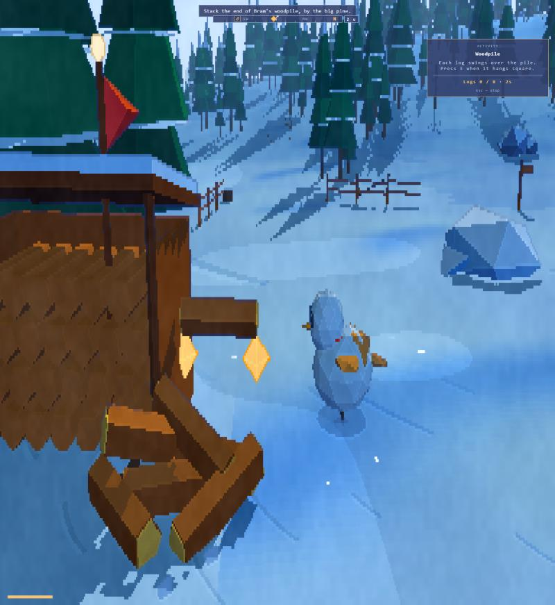
Woodpile: the swinging log is mostly hidden behind the shed.
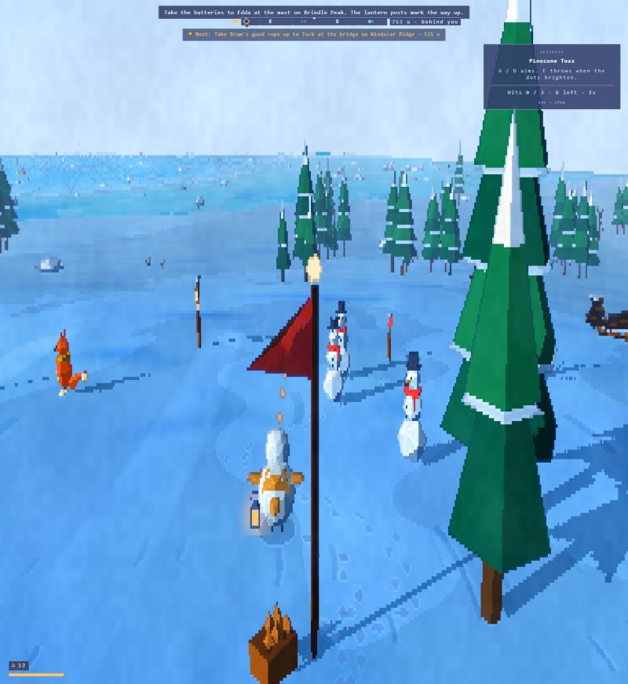
Pinecone toss: faint aim dots, with the flagpole across them.
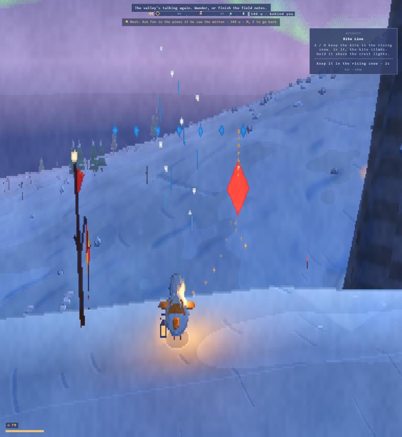
Kite: A/D shows no visible effect on the kite.
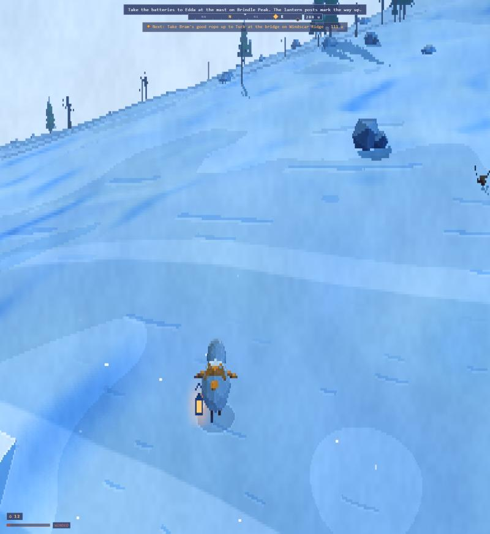
Summit: snow, sky and rocks all one light blue.
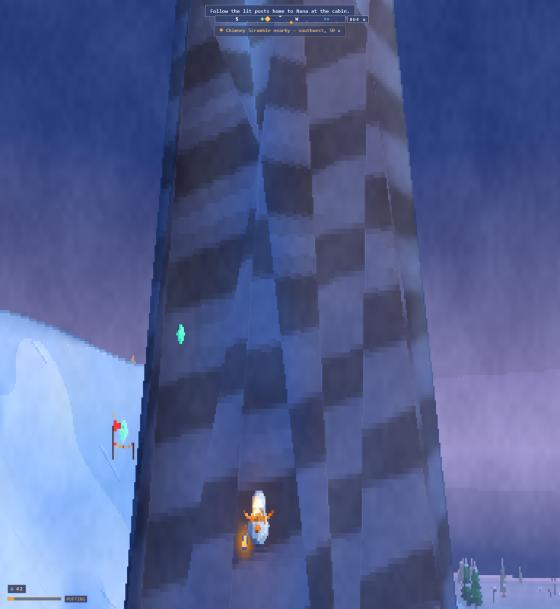
Near Windscar: a see-through rock fills the screen with a checkerboard.
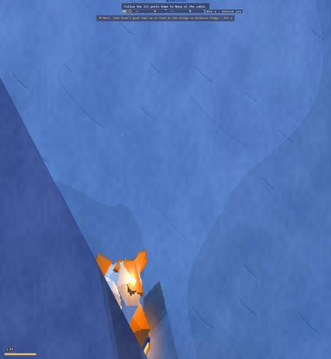
Reported bug: view sunk into a steep slope, Pip half-buried.
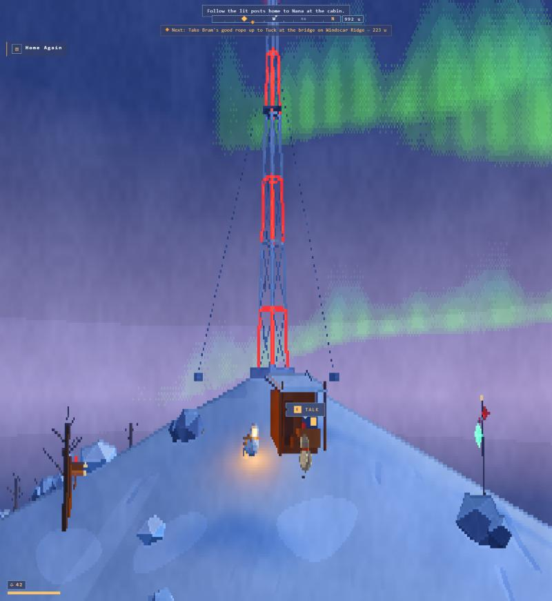
Edda: "Follow the lights down", but the critic saw long stretches of dark posts.
What worked
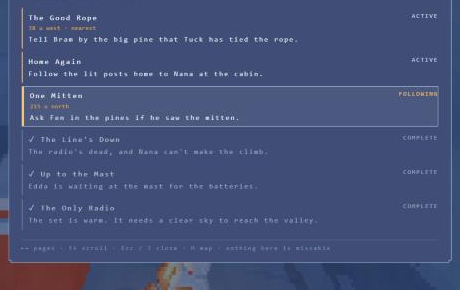
Quests page: distances, nearest, following.
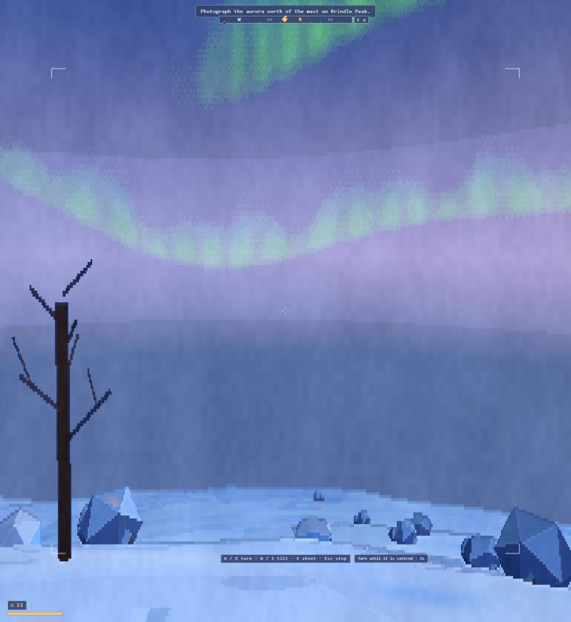
Aurora viewfinder.
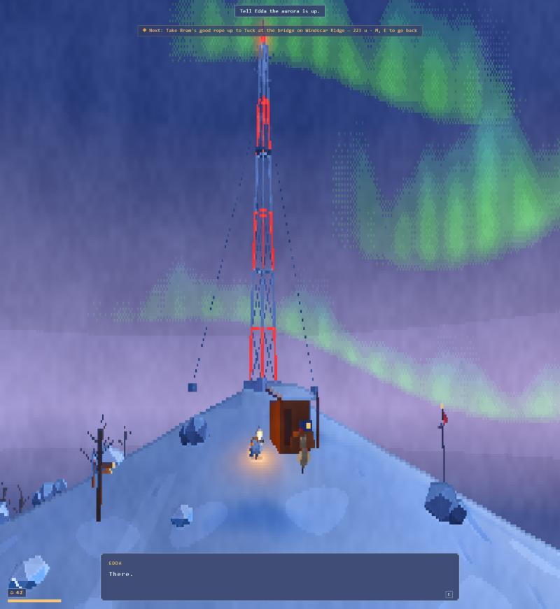
Edda, the mast and the aurora.
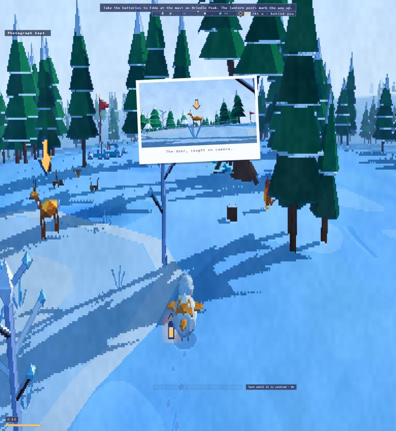
Deer photo and its polaroid.
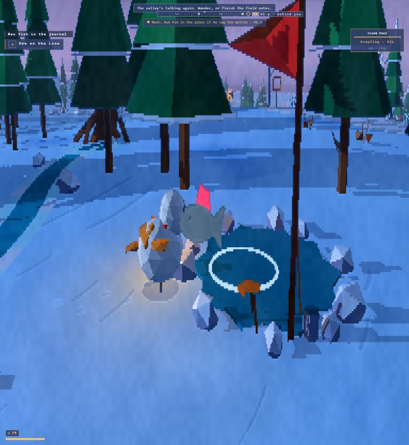
A grayling on the line.
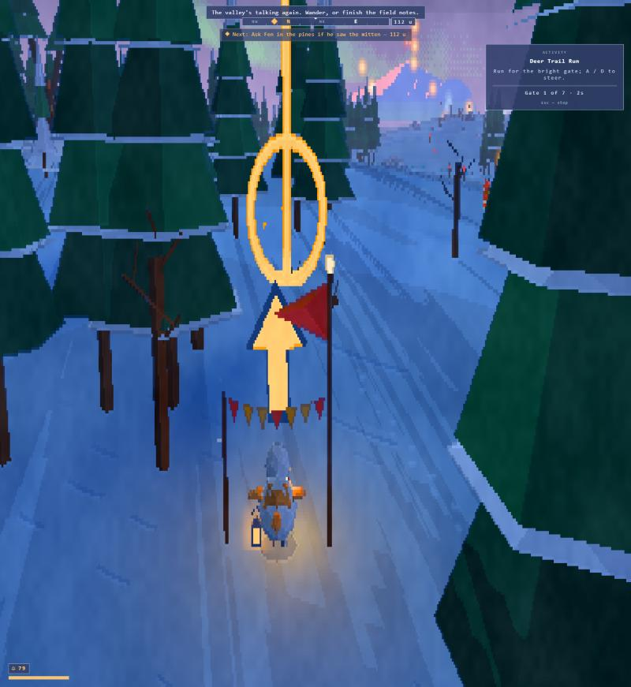
Deer Trail Run, the first gate.
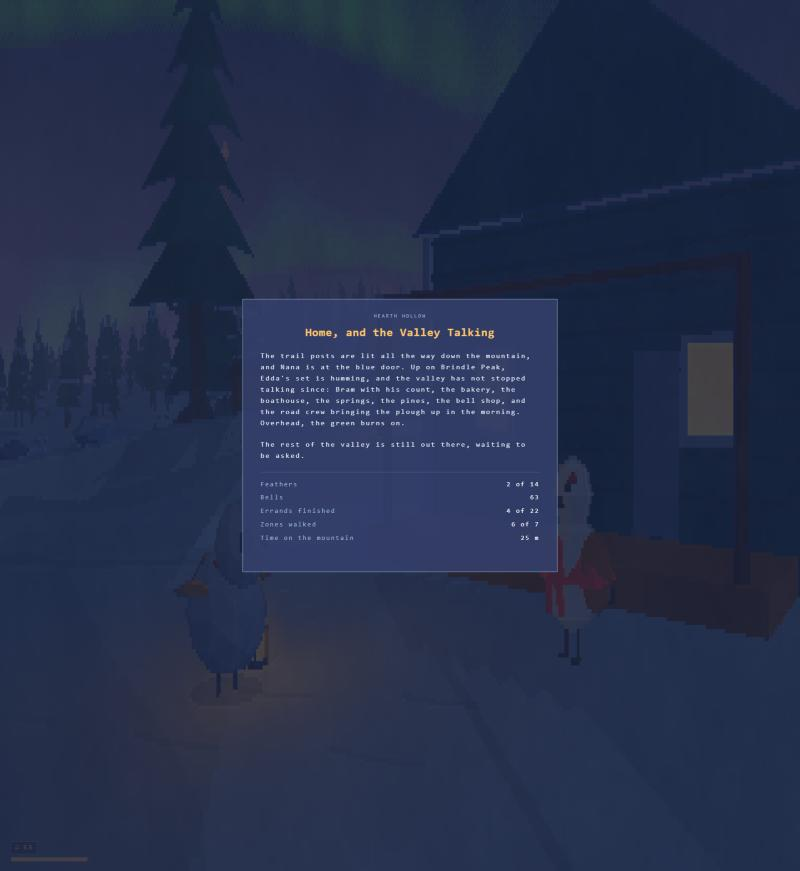
The ending card.